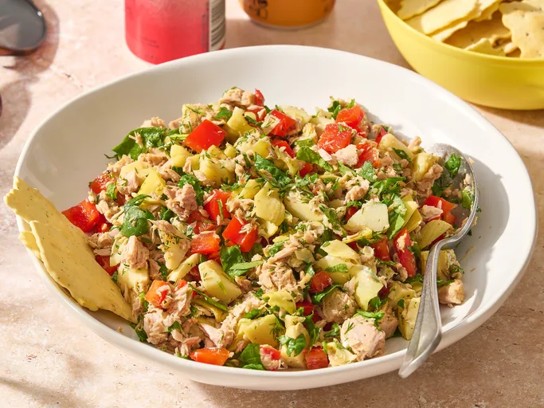

Tuna-Artichoke Salad
A delicious, healthy dish perfect for lunch or a light dinner.

Ingredients
- 1 (6 ounce) jar artichoke hearts, drained and chopped
- ¼ cup chopped fresh dill
- 1 tablespoon olive oil
- 1 tablespoon lemon juice
- 2 cloves garlic, minced
- ½ teaspoon ground black pepper
- 1 cup chopped fresh spinach
- 1 (5 ounce) can tuna, drained
- 1 red bell pepper, chopped
Steps
- Gather all ingredients.
- Mix artichoke hearts, dill, olive oil, lemon juice, garlic, and black pepper together in a bowl.
- Add spinach, tuna, and red bell pepper and toss.
Go Home